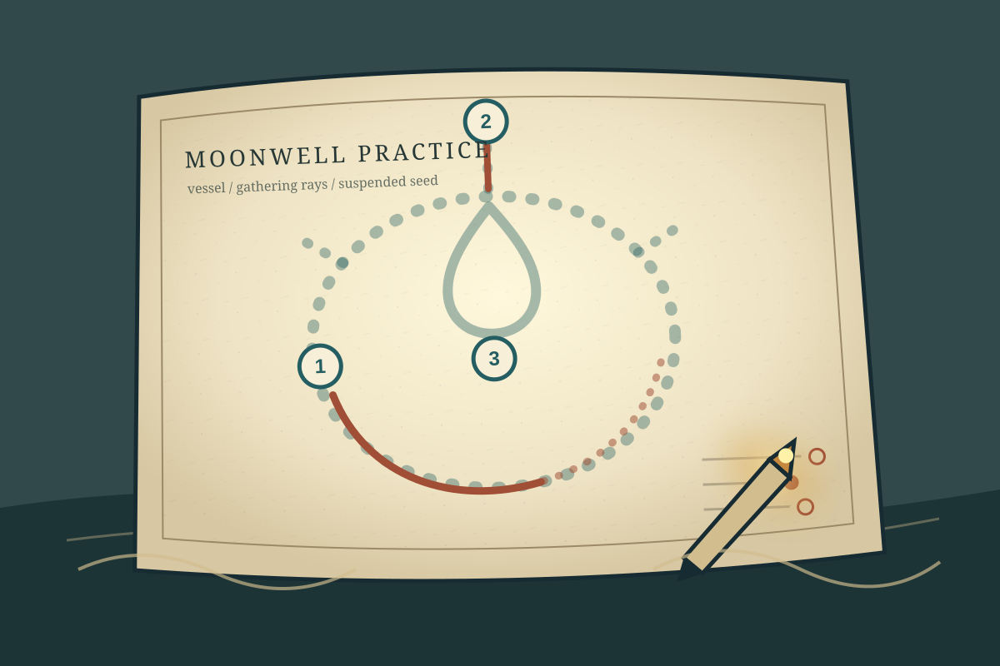

Plate I
The Moonwell stencil
A broad vessel, three gathering rays, and a suspended seed form a new three-step practice mark. Dashed paths suggest order without demanding perfect tracing.
- Ghosted guides identify the current stroke.
- Numbered anchors communicate sequence without color alone.
- Warm ink records the learner's own line over the cool stencil.